Evolution of machine learning through key milestones!
👩💻 By Sweta Singh
🏫 An undergraduate
✍️ Computer Science and Engineering Department
Warren McCulloch and Walter Pitts propose a mathematical model of artificial neurons, laying the groundwork for neural networks.
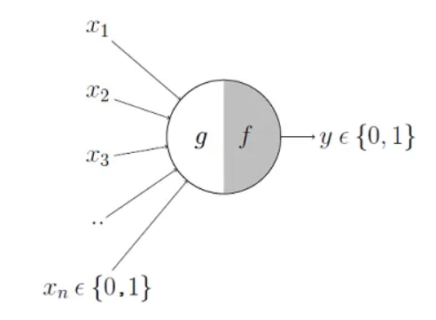
The Dartmouth Workshop marks the birth of AI as a field, with the aim of developing machines that can mimic human intelligence.
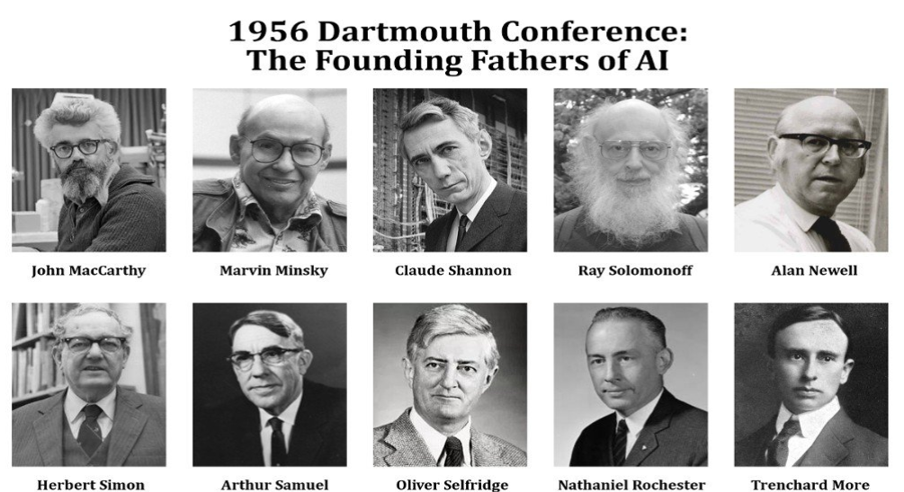
IFrank Rosenblatt develops the perceptron, a type of artificial neural network, capable of learning and pattern recognition.
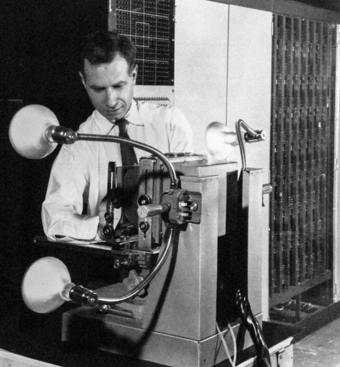
The Nearest Neighbor algorithm is introduced for pattern recognition and classification tasks.
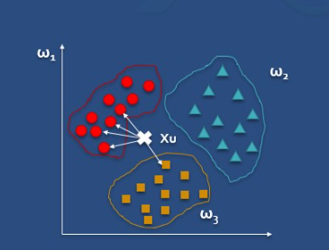
The concept of decision trees is proposed as a machine learning method for classification and regression.
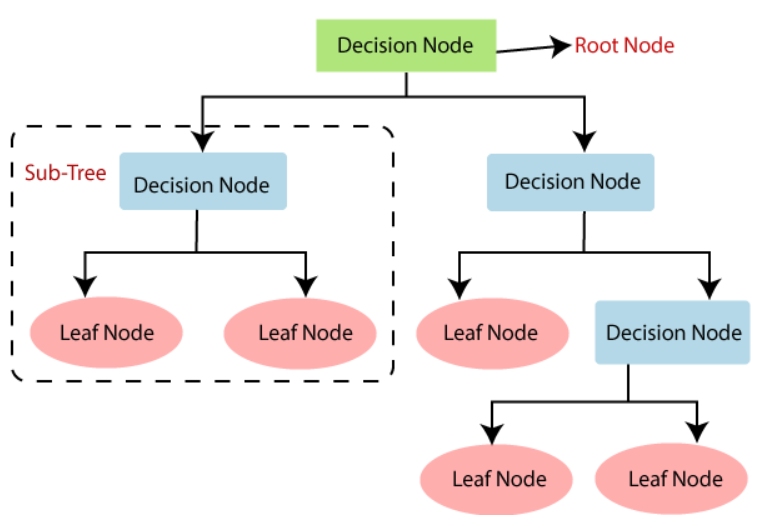
Paul Werbos introduces the backpropagation algorithm, a technique for training multi-layer neural networks.
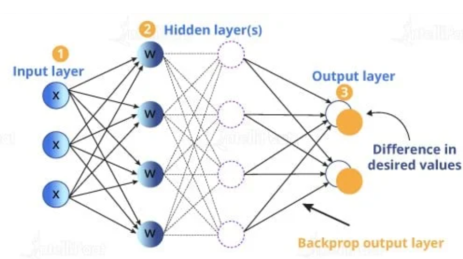
Vladimir Vapnik and colleagues develop Support Vector Machines, a powerful algorithm for classification and regression tasks.
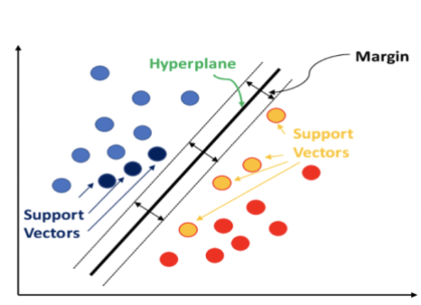
Reinforcement learning algorithms, such as Q-learning and TD-Gammon, gain popularity for training agents in an interactive environment.
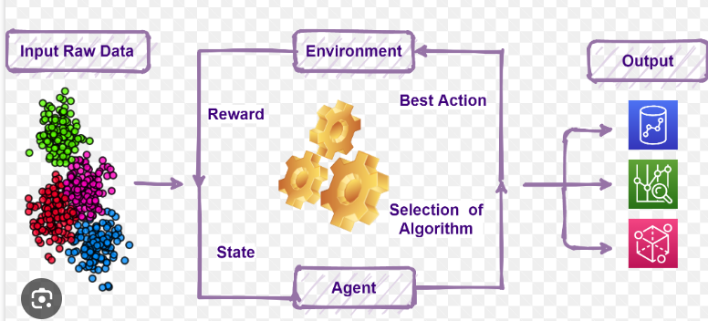
IBM's Deep Blue defeats chess world champion Garry Kasparov, demonstrating the potential of AI in complex strategic games.
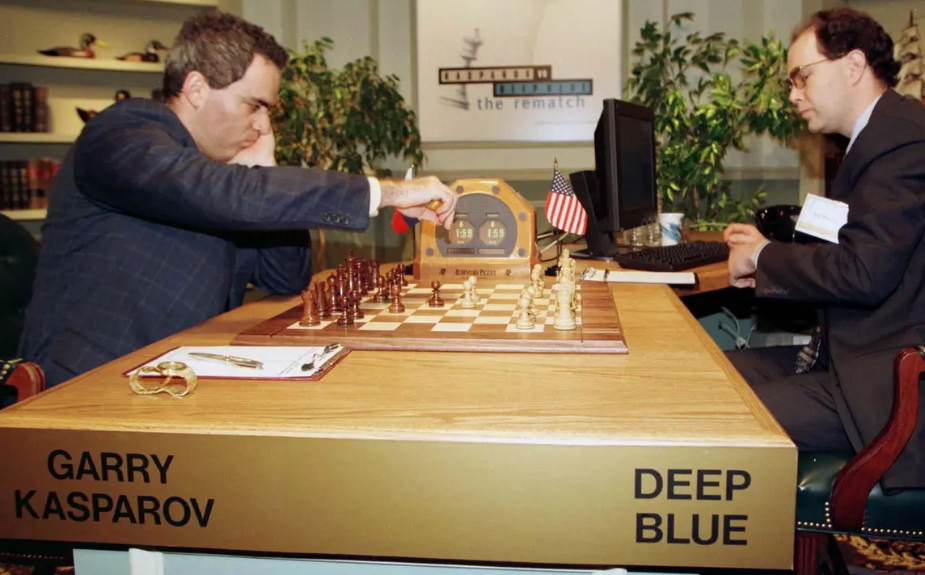
Geoff Hinton and colleagues show the effectiveness of deep neural networks in training large-scale models using unsupervised pre-training.
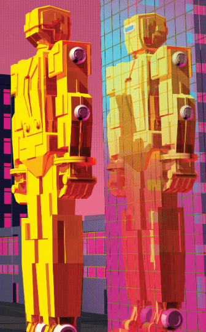
The ImageNet Large Scale Visual Recognition Challenge is introduced, driving advancements in image classification using deep convolutional neural networks.
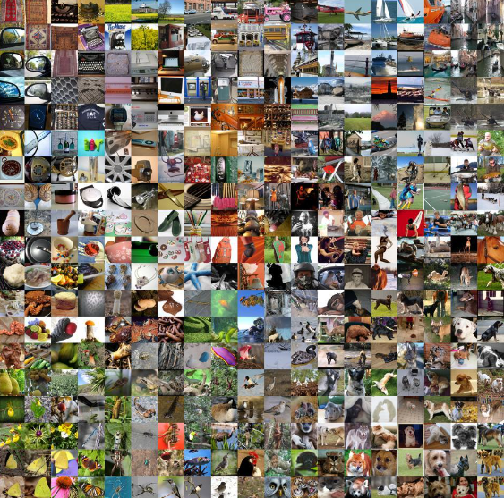
AlexNet, a deep convolutional neural network developed by Alex Krizhevsky and colleagues, achieves a significant breakthrough in image classification accuracy.
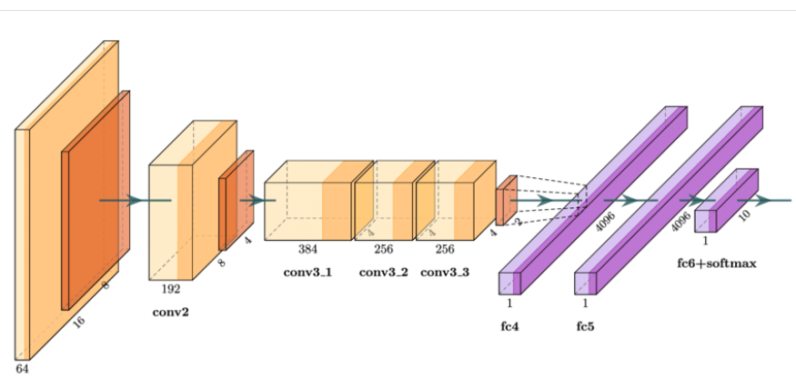
TAlexNet, a deep convolutional neural network developed by Alex Krizhevsky and colleagues, achieves a significant breakthrough in image classification accuracy.
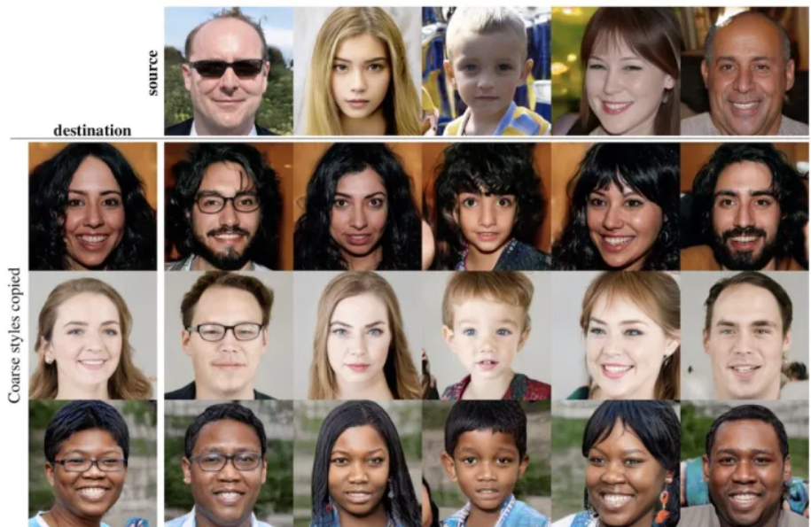
DeepMind's AlphaGo defeats world champion Go player Lee Sedol, demonstrating the power of deep reinforcement learning in complex board games.
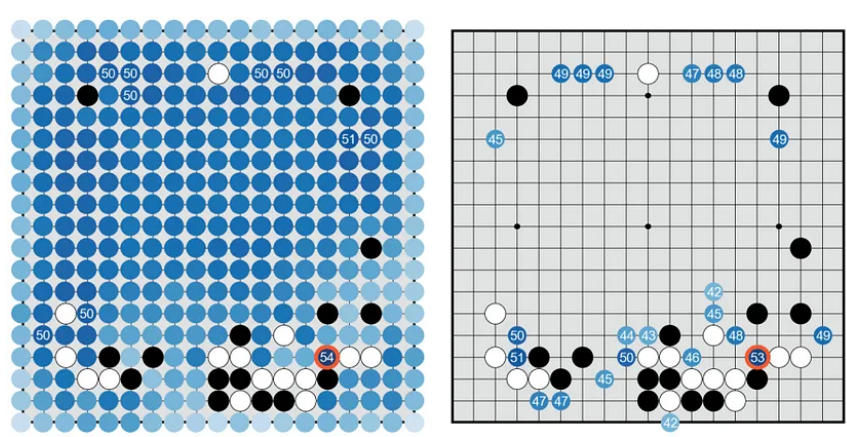
Transfer learning techniques gain prominence, allowing pre-trained models to be utilized for various downstream tasks with limited data.
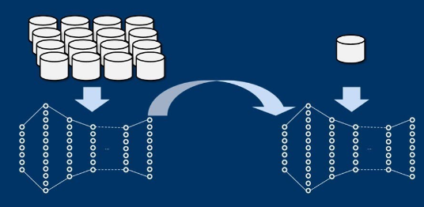
The Transformer architecture is introduced, revolutionizing natural language processing with models like BERT and GPT.
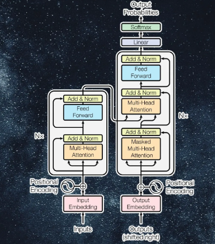
OpenAI releases GPT-3, a large-scale language model that exhibits impressive text generation capabilities and marks a milestone in natural language processing.